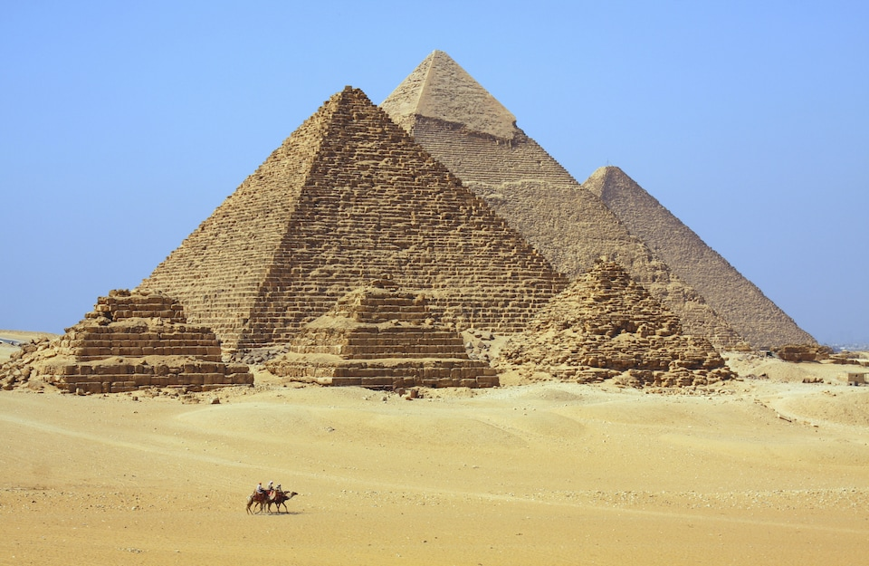

Dentro de esta seccion de la pagina podremos encontras los lugares mejor calificados y mas visitados de los ultimos años
Priamide de Giza, Egipto
Keops, Kefren y Micerinos conforman la única maravilla del mundo antiguo que sigue existiendo hoy día, y eso a pesar de que cuentan con nada menos que 5 mil años de antigüedad. Admirar las tres pirámides de cerca es algo asombroso.
Torre Eiffel, Francia
a Torre Eiffel se ha convertido en un símbolo universal de los viajes. Una visita a la Torre Eiffel encabeza muchas listas de categorías, algo no sorprendente teniendo en cuenta que unos 7 millones de visitantes al año

Roma, Italia
La ciudad eterna es una lección de Historia para cualquier viajero. Hay tanto que hacer en Roma: ir hasta el centro del Imperio Romano, ver el Coliseo y todas las ruinas arqueológicas, el Panteón, cruzar El puente Sant'Angelo, Plaza España, dejarse maravillar con las obras de arte de los Museos del Vaticano. La Basílica de San Pedro del Vaticano, además, es la atracción turística más popular de todas en Europa.